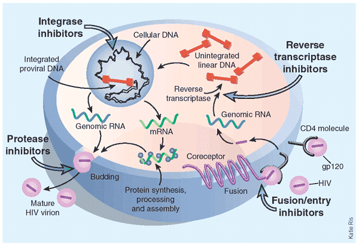
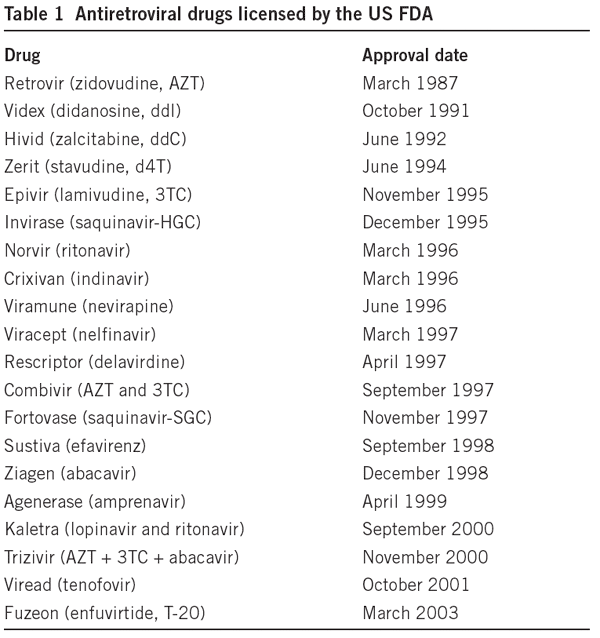
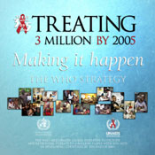
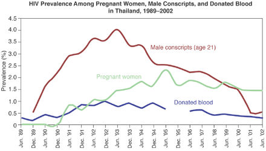

Treatment
The replication cycle of HIV

- HIV binds to CD4 cell surface molecules, entry into the cell also requires binding to co-receptorsCXCR4 and CCR5). This step can be inhibited by fusion/entry inhibitors.
- HIV is uncoated inside the cell and reverse transcriptase copies genomic RNA into DNA, making errors at a frequence of about one per replication cycle. Reverse transcriptase inhibitors were the first class of HIV inhibitors to be used as drugs.
- Viral DNA can integrate into DNA and become a part of the cellular genome. This step makes the infection irreversible, and may mean that eliminating the virus from an infected individual is not possible. Integrase inhibitors are designed to block this step of infection.
- The virus uses cellular machinery to synthesize viral proteins. Several of these are long amino acid chains which must be cleaved by a specific viral protease before new viral particles can become active. Protease inhibitors block viral maturation at this step.
New drugs are rapidly being developed

The drugs interfer with HIV replication at multiple steps as indicated above (integrase inhibitors in developmental stages only). HAART or highly active anti-retroviral therapy with a combination of drugs results in a dramatic reduction in viral levels. HAART coupled with improved treatments of HIV caused secondary infections has dramatically improved survival for HIV infected patients.
Deaths in the United States.
Image courtesy of HIV Insight, Nature 410,966 (01). Used with permission.
HAART increases survival, but does not eliminate the virus. CD4+ T cells maturing in the thymus can be infected and harbor virus indefinately. Virus levels rise rapidly if HAART is discontinued.
Immune function is significantly restored in treated individuals. However, the drug regime is difficult and accompanied by complications that may prevent continued treatments.
RNA viruses rapidly mutate. 10 billion HIV-1 virions are generated daily, with a rate giving one mutation for each new genome of 9,2000 nucleotides per replication cycle. Genomes with every possible mutation and many double mutations are generated daily. The rapidly changing virus makes therapy difficult.
Resistant virus emerges at high frequency.
Therapy is very expensive, and cannot be afforded by most countries with significant numbers of HIV infected people. Providing affordable drugs throughout the world remains a difficult goal for world health.
 3 by 5; an international effort to increase the availability of antiretroviral drugs, with a goal of treating 3 million HIV infected people by 2005.
View animations of the HIB lifecycle and descriptions of drug actions, courtesy of CellsAlive. http://www.cellsalive.com/hiv0.htm
Vaccines
- Vaccination to activate a long term immune response has erradicated small pox, and has nearly eliminated polio as a human disease. Major efforts are underway to develop HIV vaccines.
- The obsticles are formidable. HIV replicates very rapidly, and errors in reverse transcription rapidly change the virus.
- The ability of the virus to remain a part of the cellular genome, and become activated when cells of the immune system become active means that infected
individuals harbor virus for the lifetime of a person.
- A major problem is that HIV causes a vigorous immune response that affords some protection against the virus, but the process of protection can also activate virus replication and cause the disease to progress. We don't know what aspects of the immune response afford protection, and what steps cause progression. If these are different, it should be possible to increase protection and decrease progression. Studies of the immune system and HIV remain a very high priority.
Education

Thialand recorded its first AIDS case in 1984, and in 1991 initiated an condom education campaign. The data show a dramatic drop in prevalence in military recruits, a success attributed to the condom education program. Some African countries, hardest hit with AIDS have also shown that promoting safe sex and the use of condoms.
- One offical early in the AIDS epidemic said that education was our most important weapon against AIDS. This remains true today.
- Abstaining from sex and avoiding any sharing of fluids (blood transfusion, needles, etc.) protects against AIDS.
- Eliminating "harmful behaviors" such as having multiple partners with unprotected sex and IV drug use would stop the world wide AIDS crisis.